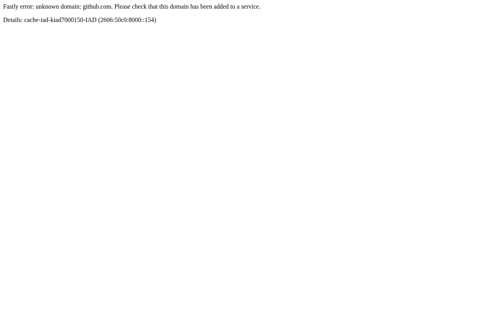
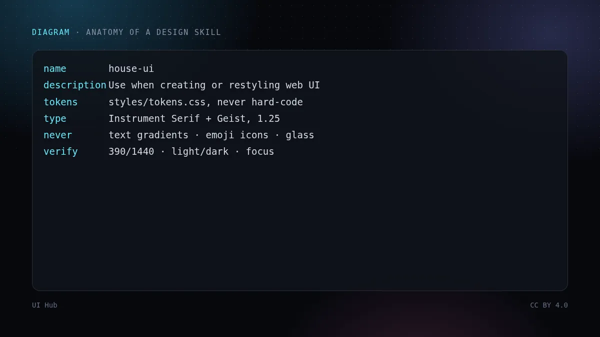
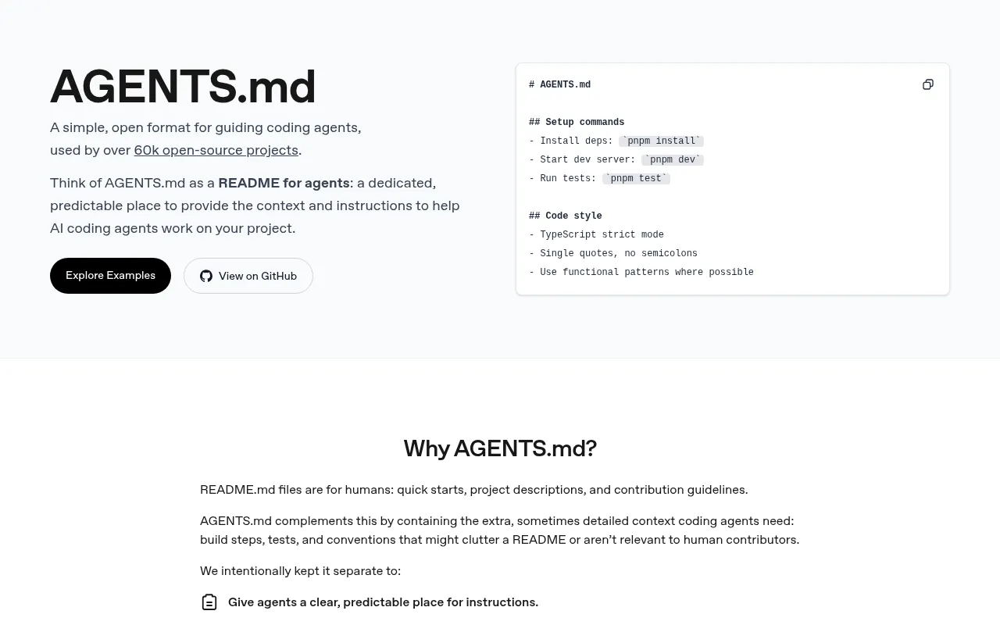

Anthropic 的 Agent Skills 是带 SKILL.md 文件的文件夹：开头是 YAML 元数据（名称和描述），后面是指令，可以附带脚本和素材。智能体先看到所有描述，只有相关时才加载完整内容。Cursor 提供放在 .cursor/rules 里的项目规则，很多编程智能体会读取仓库根目录的 AGENTS.md。文件不同，思路一样：持久、有作用范围的指令。


---
name: house-ui
description: Use when creating or restyling any web page or component.
---
1. Load tokens from styles/tokens.css. Never hard-code colour/spacing.
2. Type: Instrument Serif display, Geist UI, scale 1.25.
3. Never: text gradients, emoji icons, glassmorphism stacks.
4. One signature effect per page (see /kb/ house style).
5. Verify in a browser: 390/1440px, light/dark, keyboard focus.
Anthropic 的公开 skills 仓库里有 frontend-design 技能；社区的 taste-skill、impeccable 等专注审美。本站百科收录了我们在用的技能，许可证允许的附全文。